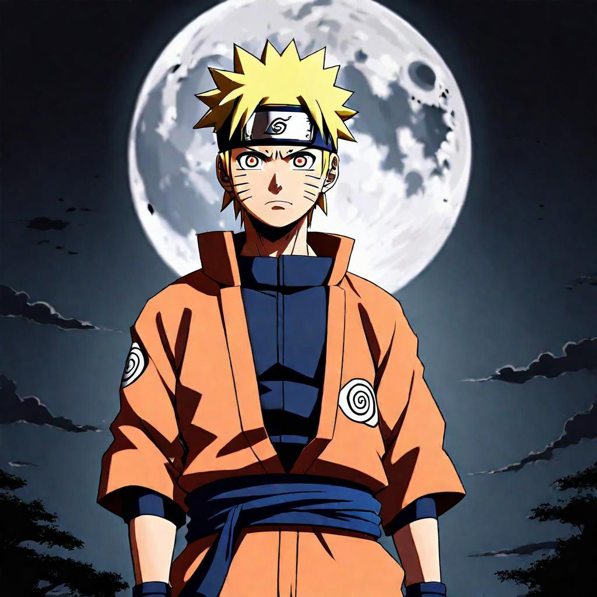

Nogizaka46 - Tsuki no Ookisa | Lyrics Meaning and Translation | Sentence for Sentence
"Tsuki no Ookisa" by Nogizaka46 is a poignant and reflective song that served as the opening theme for the anime series Naruto Shippuden. The song's melodic tune and deep lyrics explore themes of resilience, self-discovery, and the significance of dreams and love. Nogizaka46, known for their harmonious vocals and emotive performances, bring a sense of introspection and hope to this track, making it a memorable opening for fans.
In this article, we will explore the lyrics of "Tsuki no Ookisa" sentence by sentence, providing the original Japanese text, Romaji, and English translation. We will also delve into the deeper meaning behind each line, revealing how the song's themes resonate with the journey of the characters in Naruto Shippuden.
Background of the Song
Release Details
"Tsuki no Ookisa" by Nogizaka46 was released in 2013 and served as an opening theme for Naruto Shippuden. The song accompanied significant moments in the series, adding a layer of emotional depth and contemplation. Its touching message and harmonious melody made it an instant hit among fans.
Inspiration and Creation
Nogizaka46 is known for their emotional and harmonious vocal performances. "Tsuki no Ookisa" reflects themes of resilience, self-discovery, and the importance of dreams and love. The group's ability to blend beautiful melodies with profound lyrical content has made this song a favorite among listeners.
Sentence-by-Sentence Lyrics Breakdown
Verse 1
Sentence 1:
Original Japanese:
今夜の月は
Romaji:
Kon'ya no tsuki wa
English Translation:
Tonight's moon
Meaning and Interpretation: Sets the scene, introducing the moon as a central symbol in the song.
Sentence 2:
Original Japanese:
なぜか一回り大きくて
Romaji:
Nazeka hitomawari ookikute
English Translation:
For some reason, it's a bit larger
Meaning and Interpretation: Highlights the unusual size of the moon, suggesting a significant moment or feeling.
Sentence 3:
Original Japanese:
いつもより明るく照らす
Romaji:
Itsumo yori akaruku terasu
English Translation:
It shines brighter than usual
Meaning and Interpretation: Describes the moon's increased brightness, symbolizing hope or clarity.
Sentence 4:
Original Japanese:
背中を丸めてとぼとぼ帰る道
Romaji:
Senaka wo marumete tobotobo kaeru michi
English Translation:
On the path home, hunched over and trudging along
Meaning and Interpretation: Depicts a weary journey, suggesting hardship or sadness.
Sentence 5:
Original Japanese:
どんな時も味方はいる
Romaji:
Donna toki mo mikata wa iru
English Translation:
There is always someone by your side
Meaning and Interpretation: Offers reassurance that one is never truly alone.
Chorus
Sentence 1:
Original Japanese:
何も言わず 泣けたらいいね
Romaji:
Nani mo iwazu naketara ii ne
English Translation:
It would be nice to cry without saying anything
Meaning and Interpretation: Expresses a wish for silent, unspoken relief.
Sentence 2:
Original Japanese:
涙が涸(か)れたら終わり
Romaji:
Namida ga karetara owari
English Translation:
When the tears dry up, it's over
Meaning and Interpretation: Suggests that once the tears are gone, so too is the pain.
Sentence 3:
Original Japanese:
もっと 僕が強くならなきゃ…
Romaji:
Motto boku ga tsuyoku naranakya…
English Translation:
I have to become stronger...
Meaning and Interpretation: Reflects a resolve to grow stronger.
Sentence 4:
Original Japanese:
悲しみは自立への一歩
Romaji:
Kanashimi wa jiritsu e no ippo
English Translation:
Sorrow is a step towards independence
Meaning and Interpretation: Suggests that experiencing sorrow can lead to personal growth and self-reliance.
Verse 2
Sentence 1:
Original Japanese:
何度 傷つけば 痛みを忘れる?
Romaji:
Nando kizutsukeba itami wo wasureru?
English Translation:
How many times must I be hurt to forget the pain?
Meaning and Interpretation: Questions the process of healing and moving past pain.
Sentence 2:
Original Japanese:
赤い血を流せば 命を思い出すさ
Romaji:
Akai chi wo nagaseba inochi wo omoidashu sa
English Translation:
When red blood flows, you remember life
Meaning and Interpretation: Indicates that experiencing pain can remind one of their vitality and existence.
Sentence 3:
Original Japanese:
道に倒れ 大の字に 空を見上げて思う
Romaji:
Michi ni taore dai no ji ni sora wo miagete omou
English Translation:
Lying on the road, looking up at the sky, thinking
Meaning and Interpretation: Depicts a moment of reflection and introspection.
Sentence 4:
Original Japanese:
真の孤独とは 過去のない者 今しか知らぬ者
Romaji:
Shin no kodoku to wa kako no nai mono ima shika shiranu mono
English Translation:
True loneliness is someone without a past, someone who knows only the present
Meaning and Interpretation: Explores the idea that true loneliness comes from lacking a connection to the past or future.
Bridge
Sentence 1:
Original Japanese:
昨日の月は どんな大きさだったのか
Romaji:
Kinou no tsuki wa donna ookisa datta no ka
English Translation:
What size was yesterday's moon?
Meaning and Interpretation: Reflects on the past, questioning the differences in perception.
Sentence 2:
Original Japanese:
掌(てのひら)で形を作る
Romaji:
Tenohira de katachi wo tsukuru
English Translation:
Making shapes with my hands
Meaning and Interpretation: Describes creating memories or interpretations with one's own hands.
Sentence 3:
Original Japanese:
生まれたその日からあの世に行く日まで
Romaji:
Umareta sono hi kara ano yo ni iku hi made
English Translation:
From the day I was born to the day I go to the other world
Meaning and Interpretation: Encompasses the entirety of life from birth to death.
Sentence 4:
Original Japanese:
見逃すこともきっとある
Romaji:
Minogasu koto mo kitto aru
English Translation:
There are surely things I've missed
Meaning and Interpretation: Acknowledges that some moments and details are inevitably overlooked.
Verse 3
Sentence 1:
Original Japanese:
仲間たちは ここにはいない
Romaji:
Nakamatachi wa koko ni wa inai
English Translation:
My friends aren't here
Meaning and Interpretation: Describes a sense of absence or separation from companions.
Sentence 2:
Original Japanese:
どこかで暮らしているよ
Romaji:
Dokoka de kurashite iru yo
English Translation:
They are living somewhere else
Meaning and Interpretation: Suggests that friends have moved on to different places or stages in life.
Sentence 3:
Original Japanese:
だけど もしも何かあったら いつだって駆けつけるだろう
Romaji:
Dakedo moshimo nanika attara itsudatte kaketsukeru darou
English Translation:
But if something happens, they will always rush to my side
Meaning and Interpretation: Expresses confidence in the enduring support of friends.
Chorus Repeat
Sentence 1:
Original Japanese:
何度 傷つけば 月は欠けて行く?
Romaji:
Nando kizutsukeba tsuki wa kakete iku?
English Translation:
How many times must I be hurt before the moon wanes?
Meaning and Interpretation: Questions the correlation between pain and the passing of time.
Sentence 2:
Original Japanese:
夜明けが 近つけば 試練も静かに消える
Romaji:
Yoake ga chikatsukeba shiren mo shizuka ni kieru
English Translation:
As dawn approaches, the trials quietly fade away
Meaning and Interpretation: Suggests that challenges diminish as new beginnings emerge.
Sentence 3:
Original Japanese:
泥を払い 立ち上がり 僕は姿勢を正す
Romaji:
Doro wo harai tachiagari boku wa shisei wo tadasu
English Translation:
Brushing off the mud
, standing up, I correct my posture
Meaning and Interpretation: Depicts the act of recovering and regaining composure after a fall.
Sentence 4:
Original Japanese:
つらいことが あった時には
Romaji:
Tsurai koto ga atta toki ni wa
English Translation:
When hard times come
Meaning and Interpretation: Acknowledges the inevitability of difficult times.
Sentence 5:
Original Japanese:
瞼(まぶた)を静かに閉じて
Romaji:
Mabuta wo shizuka ni tojite
English Translation:
Quietly close your eyelids
Meaning and Interpretation: Suggests taking a moment to reflect and find peace.
Sentence 6:
Original Japanese:
今日の 大きな月を想って
Romaji:
Kyou no ookina tsuki wo omotte
English Translation:
Think of the large moon tonight
Meaning and Interpretation: Encourages drawing strength and inspiration from the present moment.
Sentence 7:
Original Japanese:
迷ってる足下 照らそう
Romaji:
Mayotteru ashimoto terasou
English Translation:
Let's illuminate the uncertain path
Meaning and Interpretation: Calls for clarity and guidance in times of doubt.
Final Verse
Sentence 1:
Original Japanese:
自分に嘘つけば 自分を失うよ
Romaji:
Jibun ni uso tsukeba jibun wo ushinau yo
English Translation:
If you lie to yourself, you will lose yourself
Meaning and Interpretation: Warns against self-deception and the importance of honesty.
Sentence 2:
Original Japanese:
月に雲がかかっても 信じてるその道を進め!
Romaji:
Tsuki ni kumo ga kakatte mo shinjiteru sono michi wo susume!
English Translation:
Even if clouds cover the moon, proceed on the path you believe in!
Meaning and Interpretation: Encourages perseverance and faith in one's chosen path despite obstacles.
Sentence 3:
Original Japanese:
何度 傷つけば 痛みを忘れる?
Romaji:
Nando kizutsukeba itami wo wasureru?
English Translation:
How many times must I be hurt to forget the pain?
Meaning and Interpretation: Reiterates the questioning of the healing process and resilience.
Sentence 4:
Original Japanese:
赤い血を流せば 命を思い出すさ
Romaji:
Akai chi wo nagaseba inochi wo omoidashu sa
English Translation:
When red blood flows, you remember life
Meaning and Interpretation: Reminds that pain can make one more aware of their vitality.
Sentence 5:
Original Japanese:
道に倒れ 大の字に 空を見上げて思う
Romaji:
Michi ni taore dai no ji ni sora wo miagete omou
English Translation:
Lying on the road, looking up at the sky, thinking
Meaning and Interpretation: Depicts a moment of deep reflection and introspection.
Sentence 6:
Original Japanese:
真の強さとは 夢を見る者 愛を信じる者
Romaji:
Shin no tsuyosa to wa yume wo miru mono ai wo shinjiru mono
English Translation:
True strength is in those who dream and those who believe in love
Meaning and Interpretation: Defines true strength as the ability to dream and believe in love.
Themes and Messages
Major Themes in the Song
- Resilience and Strength: The lyrics emphasize the importance of enduring hardship and growing stronger.
- Self-Discovery and Reflection: Highlights the journey of understanding oneself and finding clarity in difficult times.
- Dreams and Love: Reflects on the significance of holding onto dreams and believing in love as sources of true strength.
Resonance with Listeners
The themes of "Tsuki no Ookisa" resonate deeply with listeners, especially fans of Naruto Shippuden, as they reflect the core values of resilience, self-discovery, and the importance of dreams and love. The song's emotional message and harmonious melody inspire a sense of hope, reflection, and the importance of staying true to oneself.
Translation Accuracy and Interpretation
Challenges of Translating Japanese to English
Translating Japanese lyrics to English involves navigating nuances and cultural differences. Certain phrases and emotions may not have direct equivalents in English, requiring interpretive translation to maintain the song's original intent and impact.
Comparison with Other Translations
- Official vs. Fan Translations: Official translations often aim for accuracy and readability, while fan translations may capture more of the song's emotional and cultural context.
- Interpretation Variations: Different translations can offer various perspectives on the song's meaning, enriching the understanding of its themes.
Connection to Naruto Shippuden
Fit Within the Anime
"Tsuki no Ookisa" is a perfect fit for Naruto Shippuden, capturing the essence of the characters' journeys, filled with resilience, self-discovery, and the significance of dreams and love. The song's emotional and harmonious style matches the contemplative and hopeful nature of the anime.
Fan Reactions
Fans of Naruto Shippuden have embraced "Tsuki no Ookisa" as an iconic opening theme, praising its deep lyrics and beautiful melody. The song is often associated with pivotal moments in the series, making it a beloved anthem among fans.
Conclusion
In summary, "Tsuki no Ookisa" by Nogizaka46 is a powerful and emotional opening theme that perfectly encapsulates the spirit of Naruto Shippuden. Its meaningful lyrics, harmonious melody, and connection to the series' core themes of resilience, self-discovery, and the importance of dreams and love make it an enduring favorite. By examining the song's lyrics sentence by sentence, we gain a deeper appreciation for its impact and the way it mirrors the journey of the characters. We invite you to share your thoughts and interpretations of "Tsuki no Ookisa" in the comments, and reflect on how this iconic song has inspired you.
Comments